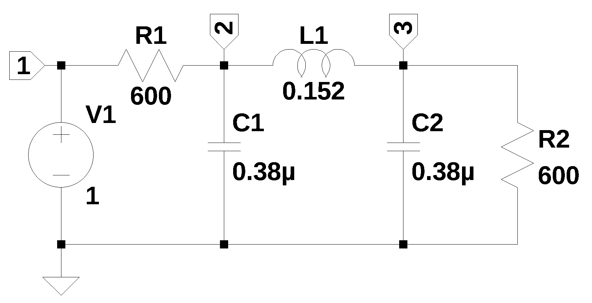

V1 1 0 1
R1 2 1 600
R2 3 0 600
C1 2 0 0.38e-6
C2 3 0 0.38e-6
L1 2 3 0.152
4 SMNA function
The python code described in Chapter 3 has been converted into a function called smna(netlist). A listing for the function can be found in Appendix A as well as on GitHub linked here.
The function implements the MNA method on a circuit’s netlist. Stamps which are templates for modifying the B, C and D matrices are used to facilitate the construction of the matrices. The stamps used in this implementation of the MNA follow the stamps of Palusinski (2005). The code is divided in the following sections.
- The preprocessor reads in the netlist text file and removes comments, extra spaces and blank lines. The first letter of the element type is capitalized to make subsequent parsing of the file easier. The number of lines are counted and the number of entries on each line are checked to make sure the count is consistent with the element type.
- The parser code loads the preprocessed netlist into a data frame. A report is generated which consists of a count of the element types in the netlist.
- Matrix formulation: Each of the matrices and vectors are generated.
- Circuit equation generation: The circuit equations are generated in a for loop. Sympy automatically does some simplification according to its default settings. The Laplace variable s is used when inductors and capacitors are included in the circuit.
There is a limited amount of error checking performed. The number of items on each line in the netlist is checked to make sure the count is correct depending on the element type. The node numbering needs to be consecutive with no skipped numbers, otherwise empty rows or columns will be included in the matrix. Unknown element types create an error.
The function takes one argument which is a text string that is the circuit’s netlist. The format of the netlist is very similar to the standard spice netlist and any of the required changes can be easily made with a text editor. The function returns six items.
- report, a text string, which is the netlist report.
- df, a Pandas data frame, which the circuit’s net list info loaded into a data frame.
- df2, a Pandas data frame, which contains the branches with unknown currents.
- \(A\), a SymPy matrix, which is (m+n) by (m+n) and is the combination of 4 smaller matrices, G, B, C, and D. These matrices were described in Chapters 2 and 3.
- \(X\), a list that holds the unknown node voltages and the currents through the independent voltage sources.
- \(Z\), a list that holds the independent voltage and current sources
The netlist can be generated by hand or exported from a schematic capture program and pasted into a Python program.
Figure 4.1 is from Williams and Taylor (1995) and was drawn using LTSpice. The nodes were labeled, otherwise LTSpice will use default labels such as N001, N002 etc. and the smna function wants integer values for the node numbers and these need to be consecutively ordered with no gaps in the numbering.

LTSpice generated the following netlist:
* Chapter_4_circuit.asc
V1 1 0 1
R1 2 1 600
R2 3 0 600
C1 2 0 0.38µ
C2 3 0 0.38µ
L1 2 3 0.152
.endThe function, smna, will ignore spice directives and comments, however, some edits are needed; e-6 for \(\mu\), also if V1 was an AC source, the line would need to be fixed. Independent sources are formatted as if they are DC sources. If AC analysis is performed, \(j \omega\) is substituted for the Laplace variable \(s\). See the test and problem circuits for the typical edits needed to fix up the netlist.
The edited circuit netlist shown below:
Calling the function to generate MNA matrices:
report, network_df, i_unk_df, A, X, Z = SymMNA.smna(net_list)sample report
Net list report
number of lines in netlist: 6
number of branches: 6
number of nodes: 3
number of unknown currents: 2
number of RLC (passive components): 5
number of resistors: 2
number of capacitors: 2
number of inductors: 1
number of independent voltage sources: 1
number of independent current sources: 0
number of Op Amps: 0
number of E - VCVS: 0
number of G - VCCS: 0
number of F - CCCS: 0
number of H - CCVS: 0
number of K - Coupled inductors: 0
The netlist information is put into a Pandas data frame. The column definitions are listed below:
- element: type of element
- p node: positive node
- n node: negative node, for a current source, the arrow point terminal, LTSpice puts the inductor phasing dot on this terminal
- cp node: controlling positive node of branch
- cn node: controlling negative node of branch
- Vout: opamp output node
- value: value of element or voltage
- Vname: voltage source through which the controlling current flows. Need to add a zero volt voltage source to the controlling branch.
- Lname1: name of coupled inductor 1
- Lname2: name of coupled inductor 2
| element | p node | n node | cp node | cn node | Vout | value | Vname | Lname1 | Lname2 | |
|---|---|---|---|---|---|---|---|---|---|---|
| 0 | V1 | 1 | 0 | NaN | NaN | NaN | 1.0 | NaN | NaN | NaN |
| 1 | R1 | 2 | 1 | NaN | NaN | NaN | 600.0 | NaN | NaN | NaN |
| 2 | R2 | 3 | 0 | NaN | NaN | NaN | 600.0 | NaN | NaN | NaN |
| 3 | C1 | 2 | 0 | NaN | NaN | NaN | 0.0 | NaN | NaN | NaN |
| 4 | C2 | 3 | 0 | NaN | NaN | NaN | 0.0 | NaN | NaN | NaN |
| 5 | L1 | 2 | 3 | NaN | NaN | NaN | 0.152 | NaN | NaN | NaN |
A second Pandas data frame is used for components having unknown currents. Unknown currents arise from inductors (L), independent voltage sources (V), op amps (O), voltage-controlled voltage sources (E), current-controlled voltage sources (H), or current-controlled current sources (F).
| element | p node | n node | |
|---|---|---|---|
| 0 | V1 | 1 | 0 |
| 1 | L1 | 2 | 3 |
The \(A\) matrix describes the connectivity of the resistors, capacitors and G type (VCCS) circuit elements.
\(\displaystyle \left[\begin{matrix}\frac{1}{R_{1}} & - \frac{1}{R_{1}} & 0 & 1 & 0\\- \frac{1}{R_{1}} & C_{1} s + \frac{1}{R_{1}} & 0 & 0 & 1\\0 & 0 & C_{2} s + \frac{1}{R_{2}} & 0 & -1\\1 & 0 & 0 & 0 & 0\\0 & 1 & -1 & 0 & - L_{1} s\end{matrix}\right]\)
The \(X\) vector is composed of the voltage unknowns to be solved for and the unknown currents from each voltage source.
\(\displaystyle \left[ v_{1}, \ v_{2}, \ v_{3}, \ I_{V1}, \ I_{L1}\right]\)
The \(Z\) vector is composed of the known currents and the known voltages.
\(\displaystyle \left[ 0, \ 0, \ 0, \ V_{1}, \ 0\right]\)
The \(A\), \(X\) and \(Z\) matrices can be formulated in to network equations by the SymPy function Eq which represents that two objects are equal, in this case \(A*X\) and \(Z\).
equ = Eq(A*X,Z)
# reform X and Z into Matrix type for printing
Xp = Matrix(X)
Zp = Matrix(Z)
temp = ''
for i in range(len(X)):
temp += '${:s}$<br>'.format(latex(Eq((A*Xp)[i:i+1][0],Zp[i])))
Markdown(temp)\(I_{V1} + \frac{v_{1}}{R_{1}} - \frac{v_{2}}{R_{1}} = 0\)
\(I_{L1} + v_{2} \left(C_{1} s + \frac{1}{R_{1}}\right) - \frac{v_{1}}{R_{1}} = 0\)
\(- I_{L1} + v_{3} \left(C_{2} s + \frac{1}{R_{2}}\right) = 0\)
\(v_{1} = V_{1}\)
\(- I_{L1} L_{1} s + v_{2} - v_{3} = 0\)
The symbols used for the network elements, node voltages, unknown currents and mutual inductance need to be created as SymPy symbols and be included in the global namespace.
# turn the free symbols into SymPy variables
var(str(equ.free_symbols).replace('{','').replace('}',''))\(\displaystyle \left( L_{1}, \ I_{L1}, \ C_{1}, \ v_{3}, \ v_{1}, \ C_{2}, \ R_{1}, \ R_{2}, \ V_{1}, \ v_{2}, \ I_{V1}, \ s\right)\)
The symbolic solution is obtained by calling the SymPy function solve, which algebraically solves equations and systems of equations.
U_sym = solve(equ,X)There are three unknown node voltages, \(v_1\) is just the controlled source V1.
\(v_{1} = V_{1}\)
\(v_{2} = \frac{C_{2} L_{1} R_{2} V_{1} s^{2} + L_{1} V_{1} s + R_{2} V_{1}}{C_{1} C_{2} L_{1} R_{1} R_{2} s^{3} + C_{1} L_{1} R_{1} s^{2} + C_{1} R_{1} R_{2} s + C_{2} L_{1} R_{2} s^{2} + C_{2} R_{1} R_{2} s + L_{1} s + R_{1} + R_{2}}\)
\(v_{3} = \frac{R_{2} V_{1}}{C_{1} C_{2} L_{1} R_{1} R_{2} s^{3} + C_{1} L_{1} R_{1} s^{2} + C_{1} R_{1} R_{2} s + C_{2} L_{1} R_{2} s^{2} + C_{2} R_{1} R_{2} s + L_{1} s + R_{1} + R_{2}}\)
\(I_{V1} = \frac{- C_{1} C_{2} L_{1} R_{2} V_{1} s^{3} - C_{1} L_{1} V_{1} s^{2} - C_{1} R_{2} V_{1} s - C_{2} R_{2} V_{1} s - V_{1}}{C_{1} C_{2} L_{1} R_{1} R_{2} s^{3} + C_{1} L_{1} R_{1} s^{2} + C_{1} R_{1} R_{2} s + C_{2} L_{1} R_{2} s^{2} + C_{2} R_{1} R_{2} s + L_{1} s + R_{1} + R_{2}}\)
\(I_{L1} = \frac{C_{2} R_{2} V_{1} s + V_{1}}{C_{1} C_{2} L_{1} R_{1} R_{2} s^{3} + C_{1} L_{1} R_{1} s^{2} + C_{1} R_{1} R_{2} s + C_{2} L_{1} R_{2} s^{2} + C_{2} R_{1} R_{2} s + L_{1} s + R_{1} + R_{2}}\)
The symbolic transfer function of \(\frac {v_3} {v_1}\) can be obtained by:
U_sym[v3]/U_sym[v1]\(\displaystyle \frac{R_{2}}{C_{1} C_{2} L_{1} R_{1} R_{2} s^{3} + C_{1} L_{1} R_{1} s^{2} + C_{1} R_{1} R_{2} s + C_{2} L_{1} R_{2} s^{2} + C_{2} R_{1} R_{2} s + L_{1} s + R_{1} + R_{2}}\)
Call the function to get element values:
element_values = SymMNA.get_part_values(network_df)
element_values\(\displaystyle \left\{ C_{1} : 3.8 \cdot 10^{-7}, \ C_{2} : 3.8 \cdot 10^{-7}, \ L_{1} : 0.152, \ R_{1} : 600.0, \ R_{2} : 600.0, \ V_{1} : 1.0\right\}\)
The numerical values for the elements can be put into equations.
\(0 = I_{V1} + 0.00166666666666667 v_{1} - 0.00166666666666667 v_{2}\)
\(0 = I_{L1} - 0.00166666666666667 v_{1} + v_{2} \cdot \left(3.8 \cdot 10^{-7} s + 0.00166666666666667\right)\)
\(0 = - I_{L1} + v_{3} \cdot \left(3.8 \cdot 10^{-7} s + 0.00166666666666667\right)\)
\(1.0 = v_{1}\)
\(0 = - 0.152 I_{L1} s + v_{2} - v_{3}\)
The network equations with actual values can then be solved by using SymPy’s solve function.
The solution to the network equations is:
\(v_{1} = 1.0\)
\(v_{2} = \frac{270750000.0 s^{2} + 1187500000000.0 s + 4.6875 \cdot 10^{15}}{61731.0 s^{3} + 541500000.0 s^{2} + 3325000000000.0 s + 9.375 \cdot 10^{15}}\)
\(v_{3} = \frac{4.6875 \cdot 10^{15}}{61731.0 s^{3} + 541500000.0 s^{2} + 3325000000000.0 s + 9.375 \cdot 10^{15}}\)
\(I_{V1} = \frac{- 20577.0 s^{3} - 90250000.0 s^{2} - 712500000000.0 s - 1.5625 \cdot 10^{15}}{12346200.0 s^{3} + 108300000000.0 s^{2} + 665000000000000.0 s + 1.875 \cdot 10^{18}}\)
\(I_{L1} = \frac{31250000.0}{1083.0 s^{2} + 4750000.0 s + 37500000000.0}\)
The transfer function from node 1 to node 3 is:
U[v3]/U[v1]\(\displaystyle \frac{4.6875 \cdot 10^{15}}{61731.0 s^{3} + 541500000.0 s^{2} + 3325000000000.0 s + 9.375 \cdot 10^{15}}\)
4.1 AC analysis
An AC analysis of the circuit can also be performed by substituting \(j \omega\) for \(s\) in the network equations and solving for the voltage at any desired node. The independent voltage source can be adjusted to a different amplitude and phase.
For example, we can change the independent voltage source, V1, to have an amplitude of 10 at a frequency of 10 Hz with a phase of shift of 30 degrees.
source_amp = 10
source_phase = 30 # phase in degrees
new_V1 = source_amp*np.exp(1j*(source_phase*np.pi/180))
freq_Hz = 10 #Hz
w = 2*np.pi*freq_Hz # radian frequency
element_values[V1] = new_V1
NE_Nw = equ.subs(element_values)
NE_Nw = NE_Nw.subs({s:1j*w})
temp = ''
for i in range(shape(NE_Nw.lhs)[0]):
temp += '${:s} = {:s}$<br>'.format(latex(NE_Nw.rhs[i]),latex(NE_Nw.lhs[i]))
Markdown(temp)\(0 = I_{V1} + 0.00166666666666667 v_{1} - 0.00166666666666667 v_{2}\)
\(0 = I_{L1} - 0.00166666666666667 v_{1} + v_{2} \cdot \left(0.00166666666666667 + 2.38761041672824 \cdot 10^{-5} i\right)\)
\(0 = - I_{L1} + v_{3} \cdot \left(0.00166666666666667 + 2.38761041672824 \cdot 10^{-5} i\right)\)
\(8.66025403784439 + 5.0 i = v_{1}\)
\(0 = - 9.55044166691297 i I_{L1} + v_{2} - v_{3}\)
Again, we can use the SymPy function, solve, to get a solution for \(V_1 = 10 sin(2 \pi 10 t + 30)\) and print the unknown voltages and currents.
U_Nw = solve(NE_Nw,X)
table_header = ['unknown', 'mag','phase, deg']
table_row = []
for name, value in U_Nw .items():
table_row.append([str(name),float(abs(value)),float(arg(value)*180/np.pi)])
print(tabulate(table_row, headers=table_header,colalign = ('left','decimal','decimal'),tablefmt="simple",floatfmt=('5s','.6f','.6f')))unknown mag phase, deg
--------- --------- ------------
v1 10.000000 30.000000
v2 4.999392 29.635345
v3 4.999899 28.723214
I_V1 0.008335 -149.635448
I_L1 0.008334 29.543958The values obtained from the Python code agree with the results from LTSpice.
4.2 Summary
In this chapter the use of the function smna(net_list) was described and an example circuit was analyzed.